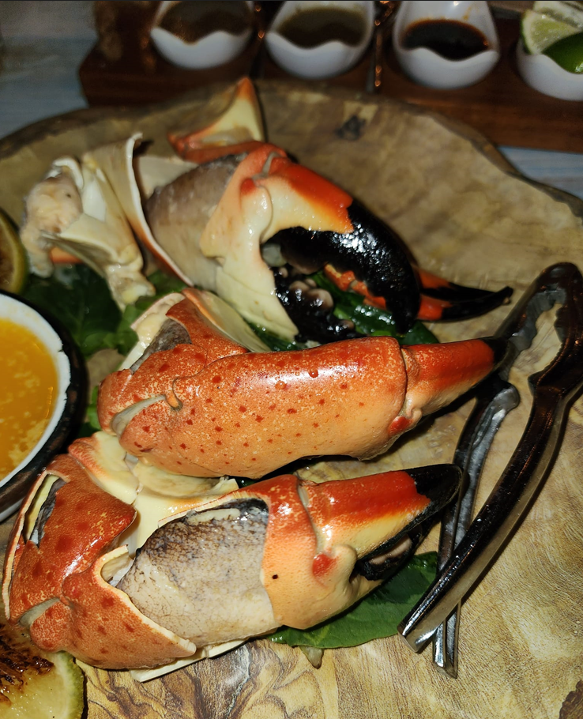
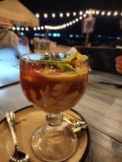
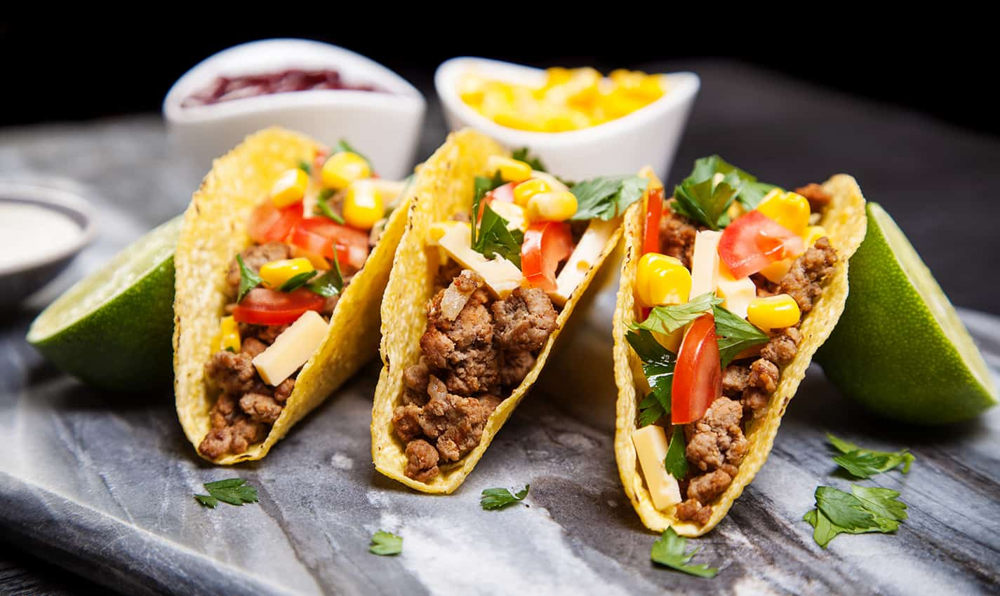
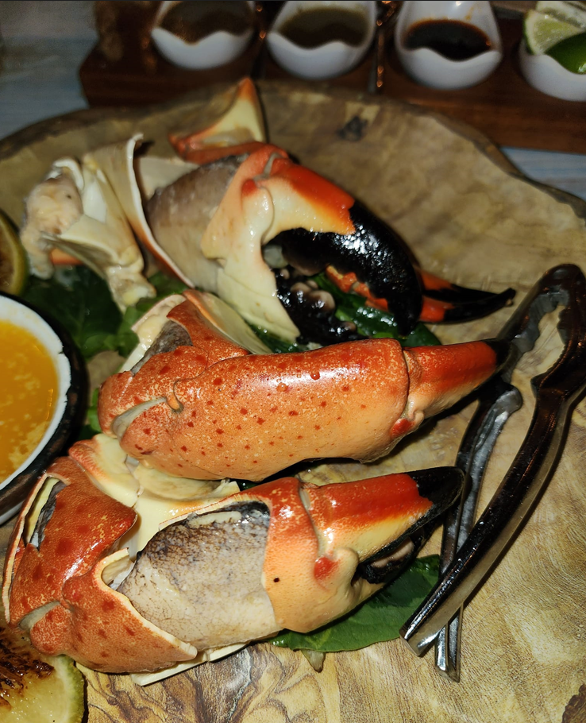
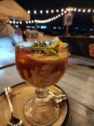
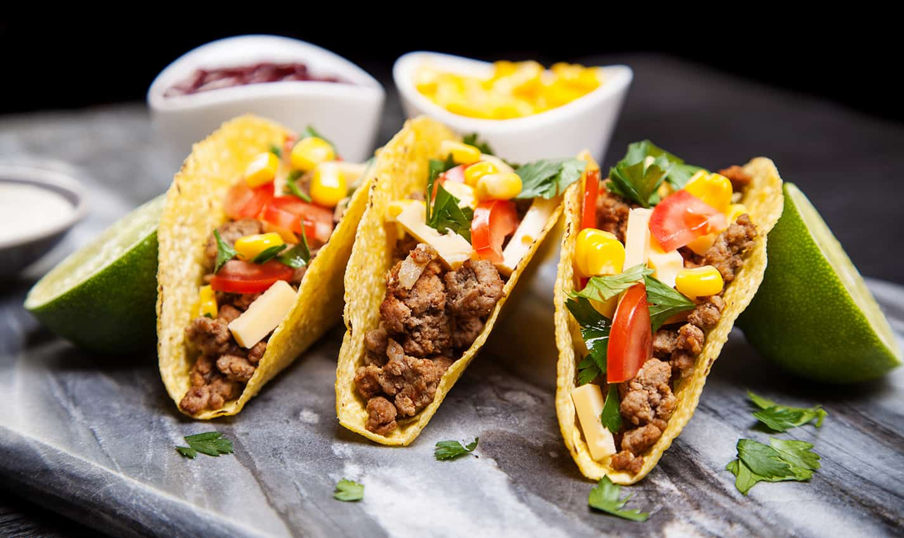

Cancún TastyBites
We tried the best traditional dishes in Cancún—savoring ceviche, fried fish tacos, and flavorful burritos.
We tried the best traditional dishes in Cancún—savoring ceviche, fried fish tacos, and flavorful burritos.
 




